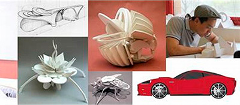

Industrial Design

LaGuardia Community College
Industrial Design
A.A.S. Degree
The Industrial Design program provides students a foundation experience in the necessary skills to begin a career in Computer Assisted Design (CAD), Model making, Product Design and Fabrication or transfer to a four-year institution.
New York City College Of Technology
Industrial Design Technology
A.A.S. Degree
The Industrial Design Technology (IND) program is designed to provide students with a wide variety of skills enabling them to utilize a number of 2D, 3D and animation/simulation software packages in several diverse fields.